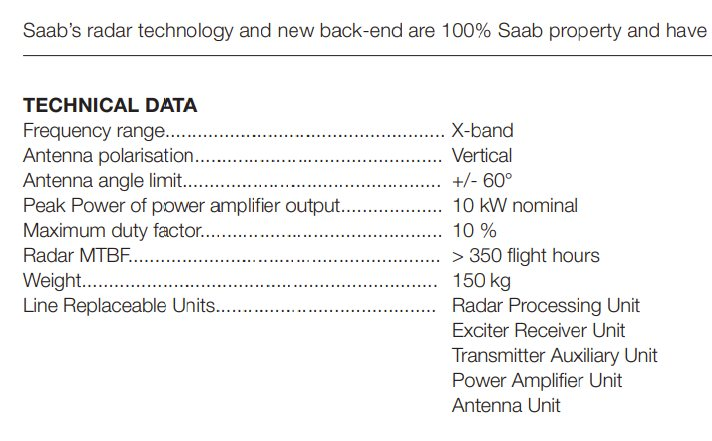
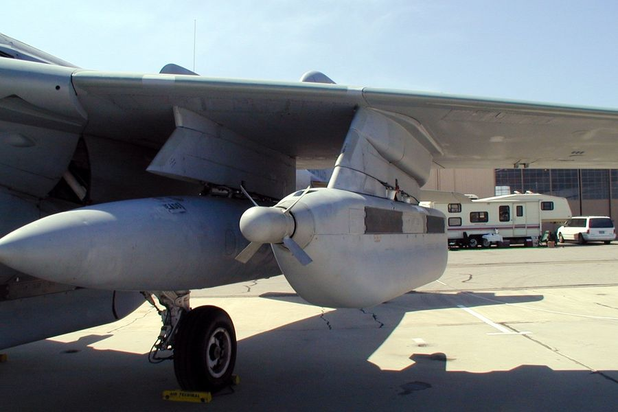
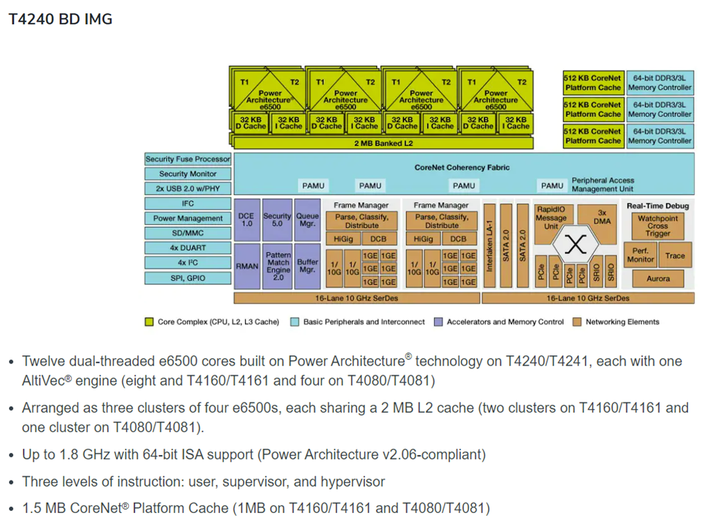
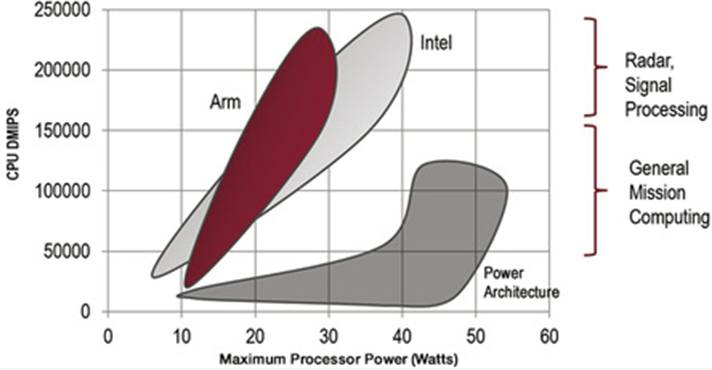
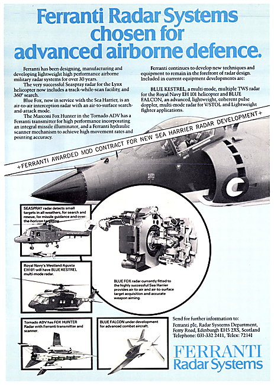
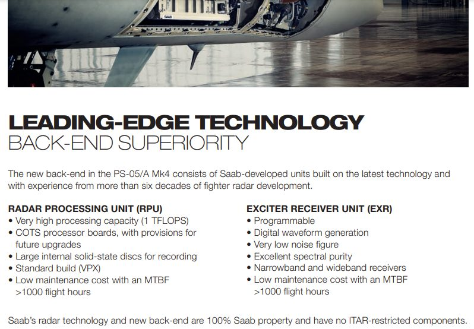

밀덕 잡담 - 전투기와 반도체, 그리고 절전
게시: 2022-08-25T06:30:15+09:00
<전투기에서도 절전해야 하는가> 태양광 패널로 전기 만드는 인공위성의 고충 중 하나가 전기 아껴 써야 하는 것인데, 반면 제트연료를 펑펑 태우는 전투기는 절전 같은 것은 신경쓰지 않아도 될까? 기본적으로 수백만 년 동안의 태양에너지가 응축된 에너지원인 석유를 쓰는 내연기관은 엄청난 에너지를 방출. WW2 때의 프로펠러 전투기 엔진만 해도 그 에너지를 100% 전기로 만든다면 수 Mega Watt 단위. 물론 대부분의 그 출력은 전기가 아니라 항공기 추력을 위한 물리적 에너지로 사용됨. 단발 엔진인 F-16의 경우는 약 60kW를 생산하는 발전기를, 쌍발엔진인 F-14의 경우엔 엔진 하나당 약 75kW를 생산하는 발전기를 장착. 참고로 전투기 레이더는 약 10kW의 에너지를 (사진1) 그리고 증권사나 은행의 원장 database를 위한 냉장고만한 대형 서버 1대는 약 8kW의 에너지를 소비.

참고로 전자전기인 EA-18G Growler 등에 장착하는 jamming pod인 AN/ALQ-99 (사진2)도 레이더만큼 많은 전력인 7~10kW를 필요. 그걸 자체 발전기로는 안정적으로 충족시킬 수가 없어서 pod의 맨 앞에는 ram air turbine이라는 작은 바람개비가 달려있고 그걸로 자체 발전. 이것 때문에 전자전기는 속력이 느려짐.

<군사장비에 꼭 7nm 반도체 써야 하나?> 조할배가 연일 반도체가 안보라면서 중국 갈구기에 여념이 없고 중국은 중국대로 악착같이 7nm 반도체 개발에 성공. 반도체가 곧 경제인 것은 알겠는데, 중국이 기존에 생산하던 14nm나 10nm 반도체로는 첨단 무기 못 만드나? 당근 아님. 대부분 군사 장비는 성능보다도 안정성과 신뢰성이 중요해서 많은 테스트를 거치고 한번 생산되면 오래 쓰기 때문에 최신 제품을 쓰지 않는 경우가 많음. 우주선과 전투기에 7nm는 아직 안 쓰는 것으로 알고 있음. 가령 (자랑스럽지는 않지만) 우리나라 공군이 최근까지 썼던 RF-4 팬텀 기반 정찰기의 정찰 카메라는 해상도가 요즘의 아이폰 카메라만도 못하다고 (카더라 통신에 불과). 하지만 결국은 첨단 반도체가 각종 무기 시스템의 경쟁력을 좌우. 성능도 성능이지만 (약간 우습지만) 에너지 효율도 중요. 당연히 nm가 더 가늘수록 전력을 적게 사용. 이야기가 약간 새지만, 가령 항공방위 분야에서 쓰이는 마이크로프로세서는 크게 인텔의 x86 아키텍처와 IBM-Motorola의 POWER 아키텍처가 양분. 가령 NASA의 우주선에도 POWER 프로세서가 많이 쓰였음. 아래 사진이 대표적인 POWER 기반의 항공기 비행제어용 및 통신용 프로세서인 NXP T420 프로세서.

POWER 프로세서는 대표적인 RISC 아키텍처로서 매우 견고하고 안정적인 것이 특징인데, 딱히 더 빠른 처리보다는 일정한 성능을 확실히 안정적으로 내기만 하면 되는 항공방산 분야에 딱 좋았기 떄문에, 비싼 가격에도 불구하고 일반 상용 분야보다 항공방산에서 마켓셰어가 높았음. 그러나 최근 NXP (모토롤라의 자회사 Freescale을 인수한 회사)에서는 POWER 기반의 항공방산용 processor 대신 ARM 기반의 processor를 생산하기 시작. 이유는 저전력 특성. ARM은 스마트폰에 쓰이는 RISC 아키텍처인데, 특성상 저전력이 중요했고, 요즘 스마트폰 경쟁이 치열하다보니 개발투자가 집중되어 결국 성능까지 좋아짐.

이게 중요한 것이, 갈수록 군사장비에서 탐지와 은폐를 위한 전자전이 중요해지면서 전력 사용량이 높아지는데, 전력 소모량이 작아야 전력 공급을 위한 발전기 무게도 줄어들고 소형화가 가능해짐. 전투기로 따지면 항속거리가 늘어나는 것이고 인공위성의 수명이 늘어나는 것이며, 고정식 방공레이더로 따져도 발전기용 연료 보급 문제가 그만큼 쉬워지는 것임. 가령 포클랜드 전쟁 때 상륙한 영국 지상군을 위한 보급에서 최우선 순위로 취급된 것이 소총탄이나 식량이 아니라 Rapier 대공미쓸의 레이더를 위한 발전기용 연료였고, 그 다음이 육상의 임시 활주로를 이용하는 Harrier 전투기를 위한 항공 연료였음. 또한 전력 사용량이 적어야 발열량도 적고 그만큼 고장도 적어지며, 냉각을 위한 장치도 쉬워짐. 반도체에서 쓰는 전력량이 많아야 얼마나 많을까 싶지만 어지간한 노트북용 CPU도 면적당 전력 사용량으로 보면 다리미 수준으로 씀.
<전투기 데이터는 어디로 가나> 대부분의 현대식 전투기에는 여러 개의 SSD가 들어가 있음. 비행 로그, 엔진 온도와 rpm 등은 물론 각종 센서 데이터 등을 수집함. 그런데 기록을 남기는 것은 나중에 누군가가 보기 위함. 전투기가 한번 비행할 때마다 가끔은 UFO가 포착되기도 하는 등 엄청난 양의 데이터가 생성되는데 그 데이터는 누가 보지? 최근 록히드마틴은 플로리다의 Eglin 공군기지의 data center 업글 프로젝트를 $213M USD에 수주. 이 프로젝트는 F-35에서 수집되는 방대한 양의 데이터를 처리하여 F-35의 각종 임무 개선에 활용될 예정.
전에 잠깐 GPU 서버 일을 할 때 이런저런 자료를 읽다 보니 군용기의 데이터들을 수집해서 Deep Learning을 통해 개량 사업 등을 한다고 읽었음. 구슬이 서말이라도 꿰어야 보배라고, 데이터가 있어도 활용을 못하면 꽝인데, 더 중요한 것은 일단 구슬 서말, 즉 데이터가 있어야 함. 가령 영국해군 Sea Harrier에 장착된 Ferranti Blue Fox radar는 하도 성능이 개판이라서 파도가 조금 거세면 저공비행하는 적기와 파도를 구별하지 못했음. 그런데 그렇게 거센 파도 속에서 날아오는 적기가 어떤 반사파를 내는지 데이터가 있어야 나중에 레이더와 그 신호 해석 소프트웨어를 개선할 수 있음. 나중에 Ferranti사는 결국 그걸 개선하여 Blue Vixen을 만들어냄.

우리나라 공군에서도 그런 일을 할까? 생각해보니 F-35에서 생성수집되는 데이터에 대해 한국 공군이 접근 권한이 있는지도 잘 모르겠음. 부족하고 떨어지고 답답해도 국산 플랫폼이 있어야 하는 이유 중 하나.
<Saab의 레이더 신호처리 장치엔 어떤 processor를 쓸까> 이것만으로는 알 수 없는데, 브로셔에서는 COTS (Commercial Off The Shelf) 제품인 processor board를 쓴다고 했고, 1 TFLOPS의 성능을 낸다고 되어 있음. 지금은 구닥다리이지만 5년 전만 해도 꽤 괜찮은 GPU로 생각되던 Nvidia K20이 대략 그 정도의 성능. 설마 그런 범용 GPU를 쓰지는 않았을 것 같고 아마 Altera 등에서 만든 상용 FPGA를 쓰지 않았을까? 나무위키를 보면 KF-21에는 다양한 제품들, 가령 인텔의 CPU와 Xilinx사의 FPGA와 AMD의 GPU 등이 들어간다고. MTBF (Mean Time Between Failure, 평균 고장 발생 빈도)가 1000 비행시간 이상이라고 되어 있는데, 1년은 8760시간. 2시간 비행하고 2일 정비한다고 치면 (실제로 그러는지는 모름) 실제 보유기간으로 따지면 24000 시간마다 1번 고장난다는 이야기이고, 대략 2~3년에 한번 고장난다는 이야기. 엄청 추운 고공에서 날아다니는 환경을 생각하면 꽤 괜찮은 것 아닌가 싶음.
